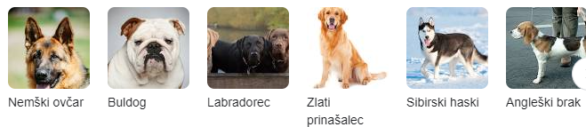

je štirinožni sesalec iz družine psov, podvrsta volka, ki so jo udomačili pred skoraj 15.000 leti in je bil prva udomačena žival.
zelo so tudi igrivi
psi so zdaj razsirjeni po celem svetu
psi so tudi lahko lovci kar jih veliko ljudi uporablja kot lovce
obstaja vec kot 300 vrst psov
so vse jedi obcasno pojedo kaksno clovesko hrano
briketi
piscanec
malo zelenjave
sadje
skoraj so vse jedi
je bil najtezji pes na svetu z maso 156.6 kg
leta 1989 je bil priznan kot naj tezji prs na svetu
visok je bil 94cm
Živel je 11 let